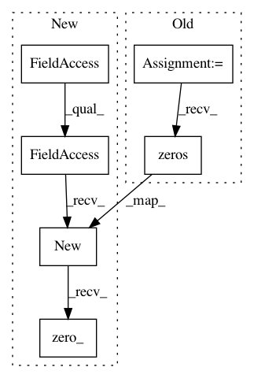

e503f50cb38fb1864fb6d66ba927b0852159428d,gpytorch/lazy/toeplitz_lazy_variable.py,ToeplitzLazyVariable,add_jitter,#ToeplitzLazyVariable#,85
Before Change
self.J_right, self.C_right, toeplitz_diag)
def add_jitter(self):
jitter = torch.zeros(len(self.c))
jitter[0] = 1e-4
return ToeplitzLazyVariable(self.c.add(Variable(jitter)), self.J_left, self.C_left,
self.J_right, self.C_right, self.added_diag)
After Change
self.J_right, self.C_right, toeplitz_diag)
def add_jitter(self):
jitter = self.c.data.new(len(self.c)).zero_()
jitter[0] = 1e-4
return ToeplitzLazyVariable(self.c.add(Variable(jitter)), self.J_left, self.C_left,
self.J_right, self.C_right, self.added_diag)
In pattern: SUPERPATTERN
Frequency: 3
Non-data size: 6
Instances
Project Name: cornellius-gp/gpytorch
Commit Name: e503f50cb38fb1864fb6d66ba927b0852159428d
Time: 2017-09-22
Author: gpleiss@gmail.com
File Name: gpytorch/lazy/toeplitz_lazy_variable.py
Class Name: ToeplitzLazyVariable
Method Name: add_jitter
Project Name: cornellius-gp/gpytorch
Commit Name: e503f50cb38fb1864fb6d66ba927b0852159428d
Time: 2017-09-22
Author: gpleiss@gmail.com
File Name: gpytorch/lazy/kronecker_product_lazy_variable.py
Class Name: KroneckerProductLazyVariable
Method Name: add_jitter
Project Name: cornellius-gp/gpytorch
Commit Name: 0b1a17d9fcb5d5de6bc67dea6f2dc09003c33bc0
Time: 2017-11-13
Author: gpleiss@gmail.com
File Name: gpytorch/lazy/kronecker_product_lazy_variable.py
Class Name: KroneckerProductLazyVariable
Method Name: mul